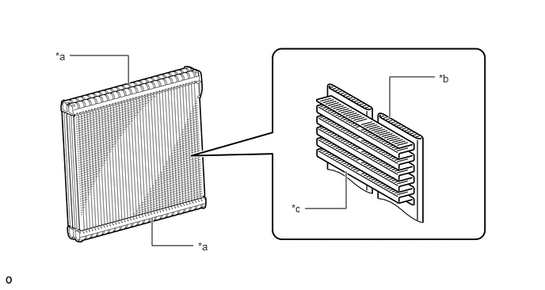
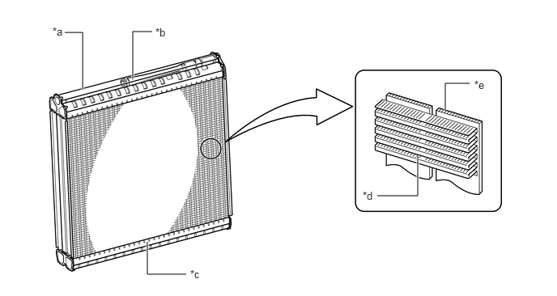
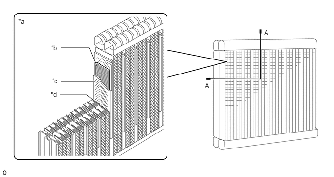
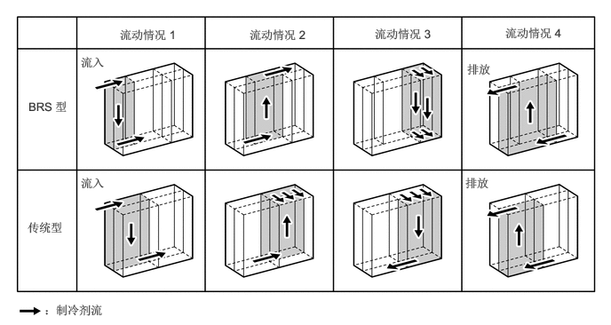
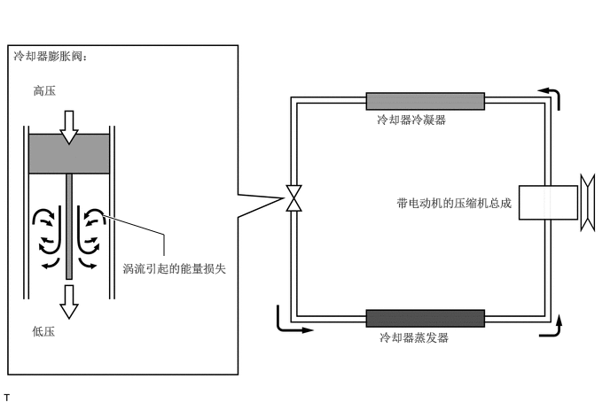
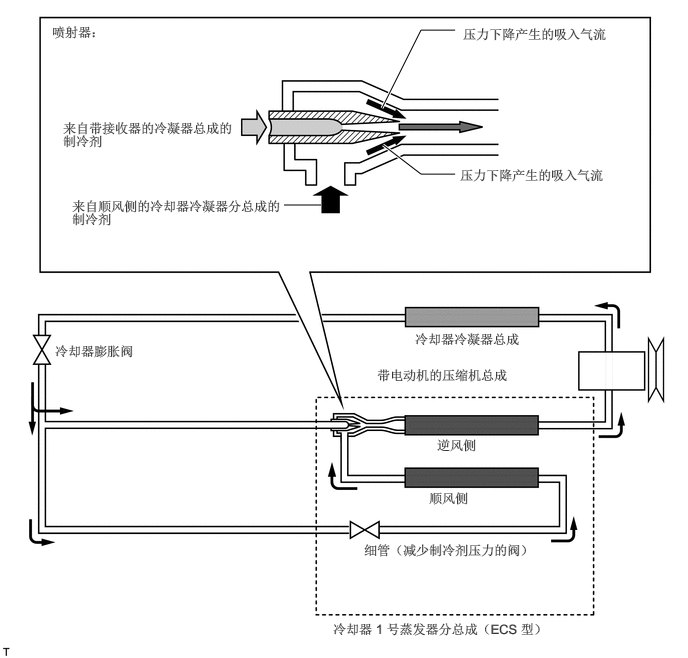
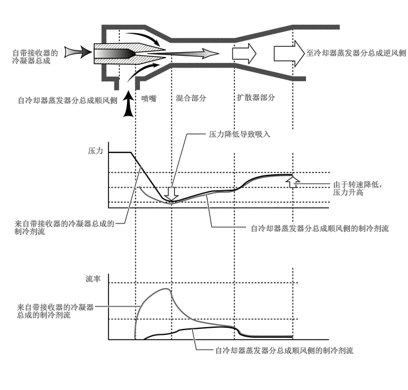

构造
高效制冷剂流 (BRS) 型冷却器 1 号蒸发器分总成（不带 3 区控制的 HV 车型）
高效制冷剂流 (BRS) 蒸发器由制冷剂箱、管和冷却片组成。制冷剂管朝外，形状为细管形，旨在以更窄的宽度实现出色的传导性。此外，尽量缩小了蒸发器尺寸并减轻了重量，旨在通过缩减冷却片高度、管厚度和冷却片倾斜度及减小芯材的厚度提高传导性。
优化了制冷剂在蒸发器的流经路径，并减少了压力损失，以提高性能并减小尺寸。

| *a | 储液罐 | *b | 多个通道管 |
| *c | 冷却片 | - | - |
喷射器循环系统 (ECS) 型冷却器 1 号蒸发器分总成（带 3 区控制的 HV 车型）
ECS 型冷却器 1 号蒸发器分总成由箱、管和冷却片组成。挤压管使其产生细小的通道，以帮助实现卓越的热传导性能并允许更薄的设计 (38 mm)。另外，降低冷却片的高度和间距及管的厚度，从而帮助促进热传导并允许使用更薄的芯材料。因此缩小蒸发器的尺寸并减轻其重量很重要。另外，蒸发器主体采用清漆，帮助抑制细菌（可能导致恶臭）的发展，并且因考虑到环保而采用无铬化表面处理。
喷射器位于 ECS 型冷却器 1 号蒸发器分总成顶箱。制冷剂流分为上风区和下风区，由于其流经蒸发器，因此允许喷射器循环 (EJECS II)*。
*：喷射器循环 (EJECS II) 为 DENSO 公司持有的注册商标。

| *a | 顶箱 | *b | 喷射器 |
| *c | 底箱 | *d | 冷却片 |
| *e | 多个通道管 | - | - |
蓄冷式冷却器 1 号蒸发器分总成（汽油车型）
蓄冷式蒸发器由箱、管、冷却片和蓄冷箱组成。
带内置保冷材料的蓄冷箱为夹层结构，位于用于制冷剂通道的管道之间，可在短时间内存储冷能。

| *a | A - A 横截面 | *b | 保冷材料 |
| *c | 蓄冷箱 | *d | 管 |
工作原理
高效制冷剂流 (BRS) 蒸发器制冷剂路径（不带 3 区控制的 HV 车型）
流经蒸发器管时，制冷剂进行热交换并以雾化状态蒸发。
如下图所示，随着制冷剂流动方向的改变，制冷剂流经管道的比例增加。这样便于制冷剂流动并可减少压力损失。

喷射器循环系统操作（带 3 区控制的 HV 车型）
传统制冷剂循环是将液体制冷剂气体发送至使用冷却器膨胀阀以产生冷气的冷却器蒸发器分总成。但是，制冷剂压力快速下降形成了造成能量损失的涡流。
在该喷射器循环中，通过喷射并膨胀高压制冷剂的喷射器利用冷却器膨胀阀造成的能量损失运行从而降低能耗。


喷射器的结构和操作（带 3 区控制的 HV 车型）
喷射器由喷嘴、混合部分和扩散部分组成。
来自冷却器冷凝器总成的高温高压液体制冷剂流在喷嘴部分降压并在下风侧的冷却器 1 号蒸发器分总成内以低温低压的气化制冷剂吸入。
制冷剂在混合部分混合，并在扩散部分降低流速以使制冷剂压缩并流入上风侧的冷却器 1 号蒸发器分总成内。这达到了下风侧上的冷却器 1 号蒸发器分总成内的制冷剂压力适当地低于上风侧上的制冷剂压力的条件从而创造了较低的温度条件。
因此，由上风侧上的冷却器 1 号蒸发器分总成冷却的空气可以比下风侧上的冷却器 1 号蒸发器分总成冷却的空气更凉，从而提高冷却器 1 号蒸发器分总成的效率。
因此，提高了能效和冷却性能。这使电动逆变器压缩机的转速降低，使空调电能消耗降低。
